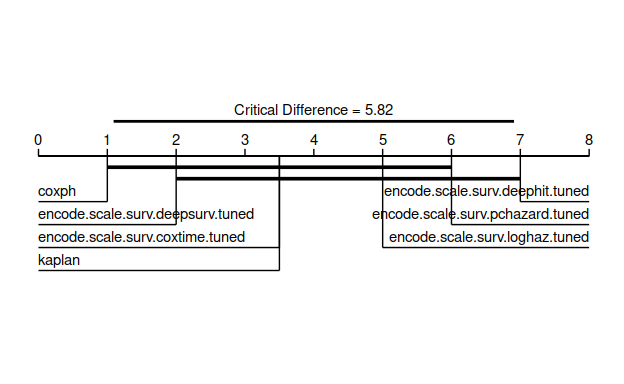

A demonstration of training, tuning, and comparing survival networks.
I have received many questions about survival neural networks (‘survival networks’) in R, ranging from “is this even possible?” to “how do I install Python in R?” and “how can I tune these models?”. If you are an R user with an interest in survival networks then this is the article for you! This is not a tutorial of how to use the relevant packages but a demonstration to answer these questions.
This is an advanced demonstration and I’m going to assume you know: i) what survival analysis is; ii) what neural networks are (and common hyper-parameters); iii) basic machine learning (ML) methods like resampling and tuning. I’m happy to cover these topics fully in future articles if requested.
In this article we will cover how to: i) install Python modules in R; ii) use models implemented in survivalmodels(Sonabend 2020) with mlr3proba(Sonabend et al. 2021) ; iii) tune models with mlr3tuning(Lang, Richter, et al. 2019) and preprocess data with mlr3pipelines(Binder et al. 2019); iv) benchmark and compare models in mlr3proba; v) analyse results in mlr3benchmark(Sonabend and Pfisterer 2020). Many of these packages live in the mlr3 family and if you want to learn more about them I’d recommend starting with the mlr3book(Becker et al. 2021a).
The code in this demonstration is a ‘toy’ example with choices made to run the code quickly on my very old laptop, all models are expected to perform poorly.
Let’s get deep learning!
We will be using several packages, to follow along make sure you install the following:
install.packages(c("ggplot2", "mlr3benchmark", "mlr3pipelines", "mlr3proba",
"mlr3tuning", "survivalmodels"))
remotes::install_github("mlr-org/mlr3extralearners")
I have installed the following versions:
ggplot2 mlr3benchmark mlr3extralearners mlr3pipelines
"3.3.3" "0.1.2" "0.3.0.9000" "0.3.4"
mlr3proba mlr3tuning reticulate survivalmodels
"0.3.2" "0.8.0.9000" "1.19" "0.1.8" The package survivalmodels currently contains the neural networks:
The first five of these use reticulate (Ushey, Allaire, and Tang 2020) to connect the great Python pycox (Kvamme 2018) package, written by Håvard Kvamme, this means you can use neural networks in R with the speed of Python. DNNSurv uses the R keras (Allaire and Chollet 2020) package.
In this article, we’re just going to look at the first five as they are better established in the literature and they have an identical interface, which simplifies tuning as we will see below. No description of the networks is provided in this article but if this is requested then I am happy to describe these in detail in future posts.
To use the Python models in survivalmodels you need to set up a Miniconda environment within R and install the required Python modules. Installing the required modules is possible with functions from survivalmodels:
library(survivalmodels)
install_pycox(pip = TRUE, install_torch = TRUE)
install_keras(pip = TRUE, install_tensorflow = TRUE)
install_pycox uses reticulate::py_install to install the Python packages pycox and optionally pycox(Paszke et al. 2017) (install_torch = TRUE). install_keras will install pycox and optionally pycox(Abadi et al. 2015) (install_tensorflow = TRUE).
Ensuring reproducible results from models implemented in Python is slightly more tricky than usual as seeds have to be set in multiple places. survivalmodels simplifies this with one function called, set_seed.
set_seed(1234)
To run these models once they’re installed, we’re going to use a different interface. survivalmodels has limited functionality, which is okay for basic model fitting/predicting, but neural networks typically require data pre-processing and model tuning, so instead we’re going to use mlr3proba, which is part of the mlr3(Lang, Binder, et al. 2019) family of packages and includes functionality for probabilistic supervised learning, of which survival analysis is a part of. mlr3 packages use the R6(Chang 2018) interface for object-oriented machine learning in R. Full tutorials for mlr3 can be found in the mlr3book and there is also a chapter for survival analysis with mlr3proba(Becker et al. 2021b).
Now let’s set up our experiment!
The first thing we need to do is get some survival datasets for training our models, in mlr3proba datasets are saved in tasks which include information about features and targets. We will use one task that comes with mlr3proba, whas, and one which we’ll set up ourselves (though is also already available in mlr3proba, this is just for example).
library(mlr3)
library(mlr3proba)
## get the `whas` task from mlr3proba
whas <- tsk("whas")
## create our own task from the rats dataset
rats_data <- survival::rats
## convert characters to factors
rats_data$sex <- factor(rats_data$sex, levels = c("f", "m"))
rats <- TaskSurv$new("rats", rats_data, time = "time", event = "status")
## combine in list
tasks <- list(whas, rats)
Now the part you are here for! We are going to train and tune the Pycox neural networks in survivalmodels (all but DNNSurv). Tuning is handled by the mlr3tuning package. We are not going to specify a custom architecture for the models but will instead use the defaults, if you are familiar with PyTorch then you have the option to create your own architecture if you prefer by passing this to the custom_net parameter in the models.
Training and tuning neural networks is an art but for this article, we are keeping it simple. We’re going to tune the neural networks with the following configurations:
To set this up we use the paradox(Lang, Bischl, et al. 2019) package (also part of mlr3) to create the hyper-parameter search space. All Pycox learners in survivalmodels have an identical parameter interface so only one search space has to be provided. In survivalmodels, the number of nodes, num_nodes, is specified as a vector of any length, which is not directly tunable. Therefore we instead separately tune over the number of nodes in a layer, nodes, and the number of layers, k, then provide a transformation to combine the two.
library(paradox)
search_space = ps(
# p_dbl for numeric valued parameters
dropout = p_dbl(lower = 0, upper = 1),
weight_decay = p_dbl(lower = 0, upper = 0.5),
learning_rate = p_dbl(lower = 0, upper = 1),
# p_int for integer valued parameters
nodes = p_int(lower = 1, upper = 32),
k = p_int(lower = 1, upper = 4)
)
search_space$trafo = function(x, param_set) {
x$num_nodes = rep(x$nodes, x$k)
x$nodes = x$k = NULL
return(x)
}
Notice that in our transformation we assume the same number of nodes per layer, this is a fairly usual assumption but one could consider more advanced transformations.
We now wrap the learners in an AutoTuner, which allows the learner to be easily tuned inside the benchmark experiment. As we are tuning multiple similar learners, we can create a function that makes creating the AutoTuner easier. For tuning we use: 2/3 split holdout, c-index optimisation, and 2 iteration random search. These settings should not be used in practice and are just to make things run faster for this demonstration, in practice I usually recommend 3-fold nested cross-validation, rsmp("cv", folds = 3), and 60 iteration random search(Bergstra and Bengio 2012), trm("evals", n_evals = 60).
Now let’s get our learners and apply our function. For all learners we’re going to set the following hyper-parameters:
frac = 0.3, early_stopping = TRUEoptimizer = “adam"epochs = 10As we are using early-stopping the number of epochs would usually be massively increased (say to 100 minimum) but again it’s reduced here to run quicker. All other hyper-parameters use the model defaults.
## learners are stored in mlr3extralearners
library(mlr3extralearners)
## load learners
learners <- lrns(paste0("surv.", c("coxtime", "deephit", "deepsurv",
"loghaz", "pchazard")),
frac = 0.3, early_stopping = TRUE, epochs = 10,
optimizer = "adam"
)
# apply our function
learners <- lapply(learners, create_autotuner)
All neural networks require some data pre-processing. This is made simple with the mlr3pipelines package and in particular the encode and scale pipeops, which respectively perform one-hot encoding and feature standardization (other methods available by changing parameters). Again we’ll make a function that can be applied to all our learners.
And we’re ready! For our experiment we’re going to use 3-fold cross-validation but usually 5-fold cross-validation would be preferred, rsmp("cv", folds = 5) . For comparison we’re also going to add Kaplan-Meier(Kaplan and Meier 1958) and Cox PH(Cox 1972) learners to the experiment. We will aggregate our benchmark results with Harrell’s C-index(Harrell, Califf, and Pryor 1982) and the Integrated Graf Score(Graf et al. 1999) (many other measures are also available).
We can aggregate results by different measures:
## Concordance index and Integrated Graf Score
msrs <- msrs(c("surv.cindex", "surv.graf"))
bm$aggregate(msrs)[, c(3, 4, 7, 8)]
task_id learner_id surv.harrell_c surv.graf
1: whas encode.scale.surv.coxtime.tuned 0.5402544 0.23660491
2: whas encode.scale.surv.deephit.tuned 0.4930036 0.39716194
3: whas encode.scale.surv.deepsurv.tuned 0.6951130 0.21126205
4: whas encode.scale.surv.loghaz.tuned 0.5116887 0.28632792
5: whas encode.scale.surv.pchazard.tuned 0.5247859 0.29908496
6: whas surv.kaplan 0.5000000 0.23717567
7: whas surv.coxph 0.7391565 0.20120291
8: rats encode.scale.surv.coxtime.tuned 0.6309753 0.05685849
9: rats encode.scale.surv.deephit.tuned 0.3769910 0.36025715
10: rats encode.scale.surv.deepsurv.tuned 0.5693399 0.05736899
11: rats encode.scale.surv.loghaz.tuned 0.6154914 0.15546280
12: rats encode.scale.surv.pchazard.tuned 0.6745137 0.34789168
13: rats surv.kaplan 0.5000000 0.05799158
14: rats surv.coxph 0.7762968 0.05321489In our toy demonstration we can tentatively conclude from these results that Cox PH is the best performing and DeepHit is the worst performing.
As we have run our models on multiple independent datasets, we can compare our results in more detail with mlr3benchmark. The commented code below is just a showcase of what is possible but no detail is provided (let me know if you’re interested in this for a future tutorial!).
library(mlr3benchmark)
## create mlr3benchmark object
bma <- as.BenchmarkAggr(bm,
measures = msrs(c("surv.cindex", "surv.graf")))
## run global Friedman test
bma$friedman_test()
X2 df p.value p.signif
harrell_c 10.5 6 0.1051144
graf 11.78571 6 0.06692358 .The Friedman test results indicate there are no significant differences between the models with respect to either measure (assuming p ≤ 0.05 is significant). For now let’s say models are significantly different if p ≤ 0.1 (I don’t recommend this is in general) just so we can take a look at a critical difference diagram(Demšar 2006) to compare these models.
## load ggplot2 for autoplots
library(ggplot2)
## critical difference diagrams for IGS
autoplot(bma, meas = "graf", type = "cd", ratio = 1/3, p.value = 0.1)

The results show that no model outperforms the Kaplan-Meier baseline and our analysis is complete (not surprising with this toy set-up!).
In this demonstration we used neural networks implemented in Python and interfaced through survivalmodels. We used the mlr3proba interface to load these models and get some survival tasks. We used mlr3tuning to set-up hyper-parameter configurations and tuning controls, and mlr3pipelines for data pre-processing. Finally we used mlr3benchmark to analyse the results across multiple datasets. I hope this article demonstrates how the mlr3 interface makes it simpler to select, tune, and compare models from survivalmodels.
Abadi, Martín, Ashish Agarwal, Paul Barham, Eugene Brevdo, Zhifeng Chen, Craig Citro, Greg S. Corrado, et al. 2015. “TensorFlow: Large-Scale Machine Learning on Heterogeneous Systems.” https://www.tensorflow.org/.
Allaire, J J, and François Chollet. 2020. “keras: R Interface to ’Keras’.” CRAN. https://cran.r-project.org/package=keras.
Becker, Marc, Martin Binder, Bernd Bischl, Michel Lang, Florian Pfisterer, Nicholas G. Reich, Jakob Richter, Patrick Schratz, and Raphael Sonabend. 2021a. Mlr3 Book. https://mlr3book.mlr-org.com.
———. 2021b. “Survival Analysis.” In Mlr3book. https://mlr3book.mlr-org.com/survival.html.
Bergstra, James, and Yoshua Bengio. 2012. “Random search for hyper-parameter optimization.” The Journal of Machine Learning Research 13 (1): 281–305.
Binder, Martin, Florian Pfisterer, Bernd Bischl, Michel Lang, and Susanne Dandl. 2019. “mlr3pipelines: Preprocessing Operators and Pipelines for ’mlr3’.” CRAN. https://cran.r-project.org/package=mlr3pipelines.
Chang, Winston. 2018. “R6: Classes with Reference Semantics.” https://cran.r-project.org/package=R6.
Cox, D. R. 1972. “Regression Models and Life-Tables.” Journal of the Royal Statistical Society: Series B (Statistical Methodology) 34 (2): 187–220.
Demšar, Janez. 2006. “Statistical comparisons of classifiers over multiple data sets.” Journal of Machine Learning Research 7 (Jan): 1–30.
Gensheimer, Michael F, and Balasubramanian Narasimhan. 2019. “A scalable discrete-time survival model for neural networks.” PeerJ 7: e6257.
Graf, Erika, Claudia Schmoor, Willi Sauerbrei, and Martin Schumacher. 1999. “Assessment and comparison of prognostic classification schemes for survival data.” Statistics in Medicine 18 (17-18): 2529–45. https://doi.org/10.1002/(SICI)1097-0258(19990915/30)18:17/18<2529::AID-SIM274>3.0.CO;2-5.
Harrell, Frank E., Robert M. Califf, and David B. Pryor. 1982. “Evaluating the yield of medical tests.” JAMA 247 (18): 2543–6. http://dx.doi.org/10.1001/jama.1982.03320430047030.
Kaplan, E. L., and Paul Meier. 1958. “Nonparametric Estimation from Incomplete Observations.” Journal of the American Statistical Association 53 (282): 457–81. https://doi.org/10.2307/2281868.
Katzman, Jared L, Uri Shaham, Alexander Cloninger, Jonathan Bates, Tingting Jiang, and Yuval Kluger. 2018. “DeepSurv: personalized treatment recommender system using a Cox proportional hazards deep neural network.” BMC Medical Research Methodology 18 (1): 24. https://doi.org/10.1186/s12874-018-0482-1.
Kvamme, Håvard. 2018. “Pycox.” https://pypi.org/project/pycox/.
Kvamme, Håvard, and Ørnulf Borgan. 2019. “Continuous and discrete-time survival prediction with neural networks.” arXiv Preprint arXiv:1910.06724.
Kvamme, Håvard, Ørnulf Borgan, and Ida Scheel. 2019. “Time-to-event prediction with neural networks and Cox regression.” Journal of Machine Learning Research 20 (129): 1–30.
Lang, Michel, Martin Binder, Jakob Richter, Patrick Schratz, Florian Pfisterer, Stefan Coors, Quay Au, Giuseppe Casalicchio, Lars Kotthoff, and Bernd Bischl. 2019. “mlr3: A modern object-oriented machine learning framework in R.” Journal of Open Source Software 4 (44): 1903. https://doi.org/10.21105/joss.01903.
Lang, Michel, Bernd Bischl, Jakob Richter, Xudong Sun, and Martin Binder. 2019. “paradox: Define and Work with Parameter Spaces for Complex Algorithms.” CRAN. https://cran.r-project.org/package=paradox.
Lang, Michel, Jakob Richter, Bernd Bischl, and Daniel Schalk. 2019. “mlr3tuning: Tuning for ’mlr3’.” CRAN. https://cran.r-project.org/package=mlr3tuning.
Lee, Changhee, William R Zame, Jinsung Yoon, and Mihaela van der Schaar. 2018. “Deephit: A deep learning approach to survival analysis with competing risks.” In Thirty-Second Aaai Conference on Artificial Intelligence.
Paszke, Adam, Sam Gross, Soumith Chintala, Gregory Chanan, Edward Yang, Zachary DeVito, Zeming Lin, Alban Desmaison, Luca Antiga, and Adam Lerer. 2017. “Automatic differentiation in pytorch.”
Sonabend, Raphael. 2020. “survivalmodels: Models for Survival Analysis.” CRAN. https://cran.r-project.org/package=survivalmodels.
Sonabend, Raphael, Franz J Király, Andreas Bender, Bernd Bischl, and Michel Lang. 2021. “mlr3proba: An R Package for Machine Learning in Survival Analysis.” Bioinformatics, February. https://doi.org/10.1093/bioinformatics/btab039.
Sonabend, Raphael, and Florian Pfisterer. 2020. “mlr3benchmark: Benchmarking analysis for ’mlr3’.” CRAN. https://cran.r-project.org/package=mlr3benchmark.
Ushey, Kevin, J J Allaire, and Yuan Tang. 2020. “reticulate: Interface to ’Python’.” CRAN. https://cran.r-project.org/package=reticulate.
Zhao, Lili, and Dai Feng. 2020. “DNNSurv: Deep Neural Networks for Survival Analysis Using Pseudo Values.” https://arxiv.org/abs/1908.02337.
For attribution, please cite this work as
Sonabend (2021, April 20). mlr3gallery: Survival Networks with mlr3proba. Retrieved from https://mlr3gallery.mlr-org.com/posts/2021-04-20-survival-networks/
BibTeX citation
@misc{sonabend2021survival,
author = {Sonabend, Raphael},
title = {mlr3gallery: Survival Networks with mlr3proba},
url = {https://mlr3gallery.mlr-org.com/posts/2021-04-20-survival-networks/},
year = {2021}
}